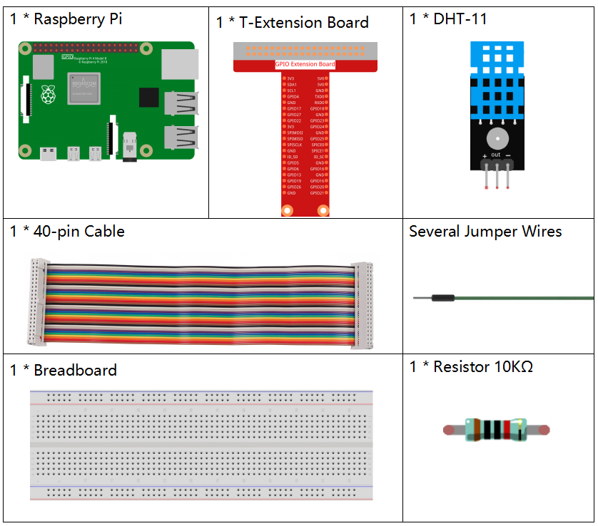
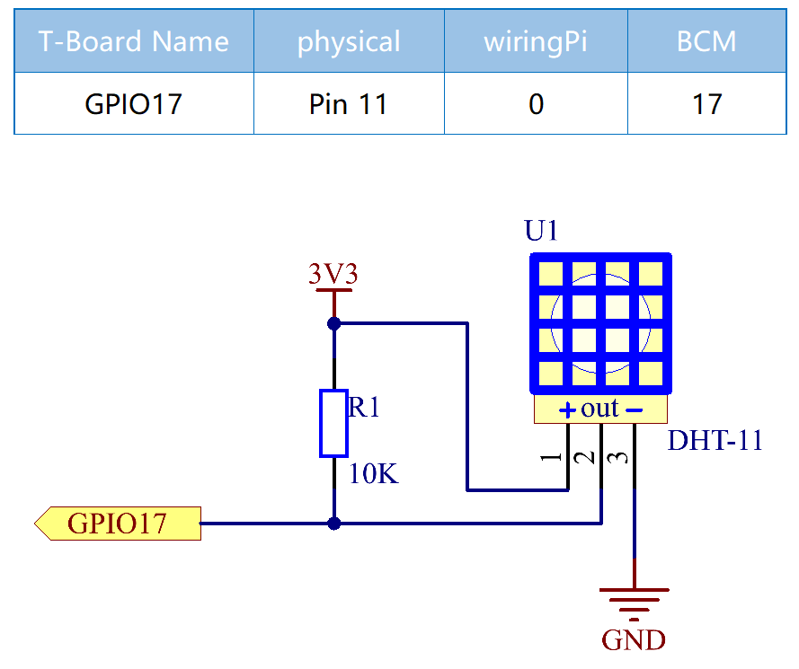

Bemerkung
Hallo und willkommen in der SunFounder Raspberry Pi & Arduino & ESP32 Enthusiasten-Gemeinschaft auf Facebook! Tauchen Sie tiefer ein in die Welt von Raspberry Pi, Arduino und ESP32 mit anderen Enthusiasten.
Warum beitreten?
Expertenunterstützung: Lösen Sie Nachverkaufsprobleme und technische Herausforderungen mit Hilfe unserer Gemeinschaft und unseres Teams.
Lernen & Teilen: Tauschen Sie Tipps und Anleitungen aus, um Ihre Fähigkeiten zu verbessern.
Exklusive Vorschauen: Erhalten Sie frühzeitigen Zugang zu neuen Produktankündigungen und exklusiven Einblicken.
Spezialrabatte: Genießen Sie exklusive Rabatte auf unsere neuesten Produkte.
Festliche Aktionen und Gewinnspiele: Nehmen Sie an Gewinnspielen und Feiertagsaktionen teil.
👉 Sind Sie bereit, mit uns zu erkunden und zu erschaffen? Klicken Sie auf [hier] und treten Sie heute bei!
2.2.3 DHT-11
Einführung
Der digitale Temperatur- und Feuchtigkeitssensor DHT11 ist ein Verbundsensor, der einen kalibrierten digitalen Signalausgang für Temperatur und Luftfeuchtigkeit enthält. Die Technologie einer speziellen Sammlung digitaler Module und die Technologie der Temperatur- und Feuchtigkeitsmessung werden angewendet, um sicherzustellen, dass das Produkt eine hohe Zuverlässigkeit und ausgezeichnete Stabilität aufweist.
Die Sensoren umfassen einen Nasselement-Widerstandssensor und einen NTC-Temperatursensor und sind mit einem Hochleistungs-8-Bit-Mikrocontroller verbunden.
Komponenten
Prinzip
Der DHT11 ist ein grundlegender, äußerst kostengünstiger digitaler Temperatur- und Feuchtigkeitssensor. Es verwendet einen kapazitiven Feuchtigkeitssensor und einen Thermistor, um die Umgebungsluft zu messen, und spuckt ein digitales Signal auf den Datenstift aus (es werden keine analogen Eingangsstifte benötigt).

Es sind nur drei Pins verfügbar: VCC, GND und DATA. Der Kommunikationsprozess beginnt damit, dass die DATA-Leitung Startsignale an DHT11 sendet, und DHT11 empfängt die Signale und gibt ein Antwortsignal zurück. Dann empfängt der Host das Antwortsignal und beginnt mit dem Empfang von 40-Bit-Feuchtigkeitsdaten (8-Bit-Feuchtigkeits-Ganzzahl + 8-Bit-Feuchtigkeits-Dezimalzahl + 8-Bit-Temperatur-Ganzzahl + 8-Bit-Temperatur-Dezimalzahl + 8-Bit-Prüfsumme). Weitere Informationen finden Sie im DHT11-Datenblatt.
Schematische Darstellung
Experimentelle Verfahren
Schritt 1: Bauen Sie die Schaltung auf.

Schritt 2: Gehen Sie zum Ordner der Kode.
cd ~/davinci-kit-for-raspberry-pi/c/2.2.3/
Schritt 3: Kompilieren Sie die Kode.
gcc 2.2.3_DHT.c -lwiringPi
Schritt 4: Führen Sie die ausführbare Datei aus.
sudo ./a.out
Nachdem die Kode ausgeführt wurde, druckt das Programm die von DHT11 erfasste Temperatur und Luftfeuchtigkeit auf dem Computerbildschirm.
Code
#include <wiringPi.h>
#include <stdio.h>
#include <stdlib.h>
#include <stdint.h>
#define MAXTIMINGS 85 // Maximum number of timing transitions
int dht11_dat[5] = {0, 0, 0, 0, 0}; // Data array to hold sensor values
// Function to read data from DHT11 sensor
void read_dht11_dat(int GPIOPIN)
{
uint8_t currState;
uint8_t laststate = HIGH;
uint8_t counter = 0;
uint8_t j = 0;
uint8_t i;
float f; // Temperature in Fahrenheit
// Reset data array before each read
dht11_dat[0] = dht11_dat[1] = dht11_dat[2] = dht11_dat[3] = dht11_dat[4] = 0;
// Pull pin down for 18 milliseconds to initiate communication
pinMode(GPIOPIN, OUTPUT);
digitalWrite(GPIOPIN, LOW);
delay(18);
// Then pull it up for 40 microseconds
digitalWrite(GPIOPIN, HIGH);
delayMicroseconds(40);
// Prepare to read the pin
pinMode(GPIOPIN, INPUT);
// Detect change and read data
for (i = 0; i < MAXTIMINGS; i++)
{
counter = 0;
// Count how long each state lasts
while (digitalRead(GPIOPIN) == laststate)
{
counter++;
delayMicroseconds(2);
if (counter == 255)
{
break;
}
}
// Save the current state
laststate = digitalRead(GPIOPIN);
if (counter == 255) break;
// Ignore first 3 transitions (DHT11 response signal)
if ((i >= 4) && (i % 2 == 0))
{
// Shift bits and store data
dht11_dat[j/8] <<= 1;
if (counter > 16)
{
dht11_dat[j/8] |= 1;
}
j++;
}
}
// Check if we received 40 bits (5 bytes) and verify checksum
if ((j >= 40) && (dht11_dat[4] == ((dht11_dat[0] + dht11_dat[1] + dht11_dat[2] + dht11_dat[3]) & 0xFF)) )
{
// Convert temperature to Fahrenheit
f = dht11_dat[2] * 9.0 / 5.0 + 32;
printf("Humidity = %d.%d %% Temperature = %d.%d °C (%.1f °F)\n",
dht11_dat[0], dht11_dat[1], dht11_dat[2], dht11_dat[3], f);
}
else
{
printf("Data not good, skip\n");
}
}
int main (void)
{
printf("Raspberry Pi wiringPi DHT11 Temperature test program\n");
// Initialize wiringPi using BCM GPIO pin numbering
if (wiringPiSetupGpio() == -1)
{
exit(1);
}
while(1)
{
// Read data from DHT11 connected to GPIO pin 17
read_dht11_dat(17);
delay(1000); // Wait 1 second before next read
}
return 0;
}
Code Erklärung
Header-Dateien einbinden: Der Code bindet notwendige Header für wiringPi-Funktionen und Standard-Ein-/Ausgabe ein.
#include <wiringPi.h> #include <stdio.h> #include <stdlib.h> #include <stdint.h>
Konstanten definieren:
MAXTIMINGS: Die maximale Anzahl der Timing-Übergänge, die vom DHT11-Sensor erwartet werden (85).
#define MAXTIMINGS 85 // Maximale Anzahl an Timing-Übergängen
Globales Datenarray:
dht11_dat[5]: Ein Array, das die 5 vom DHT11-Sensor empfangenen Datenbytes speichert.
int dht11_dat[5] = {0, 0, 0, 0, 0}; // Datenarray zur Speicherung der Sensordaten
Funktion
read_dht11_dat(int GPIOPIN): Liest Daten vom DHT11-Sensor, der an den angegebenen GPIO-Pin angeschlossen ist.Initialisierung: Setzt das Array
dht11_datvor jedem Lesen auf Null zurück.dht11_dat[0] = dht11_dat[1] = dht11_dat[2] = dht11_dat[3] = dht11_dat[4] = 0;
Startsignal: Schaltet den GPIO-Pin für mindestens 18 Millisekunden auf Low, um dem DHT11 das Startsignal zu geben.
pinMode(GPIOPIN, OUTPUT); digitalWrite(GPIOPIN, LOW); delay(18); // 18 Millisekunden
Schaltet den GPIO-Pin für 40 Mikrosekunden auf High.
digitalWrite(GPIOPIN, HIGH); delayMicroseconds(40); // 40 Mikrosekunden
Setzt den GPIO-Pin in den Eingabemodus, um Daten vom Sensor zu lesen.
pinMode(GPIOPIN, INPUT);
Datenleseschleife: Die Schleife läuft bis zu MAXTIMINGS-Mal, um die Datenbits zu lesen.
Bei jedem Übergang (von High zu Low oder umgekehrt) wird gemessen, wie lange der Pin in jedem Zustand bleibt.
for (i = 0; i < MAXTIMINGS; i++) { counter = 0; while (digitalRead(GPIOPIN) == laststate) { counter++; delayMicroseconds(2); if (counter == 255) { break; } } laststate = digitalRead(GPIOPIN); // ... Rest der Schleife }
Extrahieren der Datenbits: Die ersten 3 Übergänge werden ignoriert, da sie Teil der initialen Antwort des DHT11 sind.
Für jedes Datenbit wird basierend auf der Dauer, die der Pin auf High bleibt, bestimmt, ob das Bit 0 oder 1 ist.
if ((i >= 4) && (i % 2 == 0)) { dht11_dat[j/8] <<= 1; if (counter > 16) { dht11_dat[j/8] |= 1; } j++; }
Überprüfung der Prüfsumme: Nach dem Empfang aller Bits wird die Prüfsumme überprüft, um die Datenintegrität sicherzustellen.
if ((j >= 40) && (dht11_dat[4] == ((dht11_dat[0] + dht11_dat[1] + dht11_dat[2] + dht11_dat[3]) & 0xFF)) )
Wenn die Prüfsumme korrekt ist, werden die Luftfeuchtigkeits- und Temperaturwerte ausgegeben.
f = dht11_dat[2] * 9.0 / 5.0 + 32; printf("Humidity = %d.%d %% Temperature = %d.%d °C (%.1f °F)\n", dht11_dat[0], dht11_dat[1], dht11_dat[2], dht11_dat[3], f);
Wenn die Prüfsumme fehlschlägt, wird eine Fehlermeldung ausgegeben.
else { printf("Daten sind nicht korrekt, überspringen\n"); }
Hauptfunktion:
Gibt eine Startmeldung aus.
printf("Raspberry Pi wiringPi DHT11 Temperatur-Testprogramm\n");
Initialisiert wiringPi unter Verwendung der BCM GPIO-Pinnummerierung.
if (wiringPiSetupGpio() == -1) { exit(1); }
Geht in eine Endlosschleife über, um jede Sekunde Daten vom DHT11-Sensor zu lesen.
while(1) { read_dht11_dat(17); delay(1000); // Warten für 1 Sekunde }